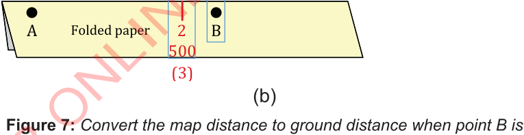

Then, move the folded paper to the left along the linear scale by aligning point B with zero (the red mark will be on the left side of the linear scale).
Study the number in the linear scale that is nearest or aligned to the red mark and label it as presented in Figure 7(b).
From Figure 7(a), the number on the left side of point B is 2 and the unit is km, so it is 2 km.
From Figure 7(b), the nearest number to the red mark is 500 and the unit is metre, so it is 500 metres.
Therefore, the ground distance from point A to B is 2 kilometres and 500 metres.
Figure 7: Convert the map distance to ground distance when point B is between two numbers on the right side of the linear scale

(d) Using a ratio scale, measure the map distance from points A to B on the folded paper with a ruler.
For example, if, the map distance between points A and B is 5 centimetres and the ratio scale is 1:50000, the real distance on the ground from point A to point B can be calculated as follows:
distance on the ground (Km) =
Distance on a map (cm) x Scale denominator
Since 1km = 100000 cm, the ground distance can be converted from centimetres to kilometres as follows:
Therefore, the distance on the ground is 2.5 kilometres.